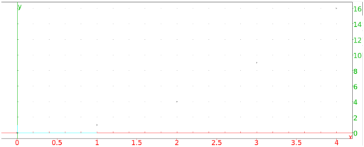
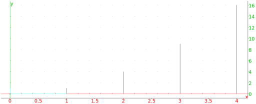

8.2.2 Scatterplots: scatterplot nuaged_points batons
A scatter plot is simply a set of points plotted on axes.
The scatterplot command draws scatter plots.
nuage_points is a synonym for scatterplot.
-
scatterplot takes two arguments:
xcoords and ycoords, a list of x-coordinates and
y-coordinates. You can also combine them into a matrix with two
columns (each list becomes a column of the matrix).
- scatterplot(xcoords,ycoords)
draws the points with the given coordinates.
Example
Input:
scatterplot([[0,0],[1,1],[2,4],[3,9],[4,16]])
or:
scatterplot([0,1,2,3,4],[0,1,4,9,16])
Output:

The batons command will also draw a collection of points, but
each point will be connected to the x-axis with a vertical line
segment.
-
batons takes two arguments:
xcoords and ycoords, a list of x-coordinates and
y-coordinates. You can also combine them into a matrix with two
columns (each list becomes a column of the matrix).
- batons(xcoords,ycoords)
draws the points with the given coordinates and connects them to the
x-axis with vertical line segments.
Example
Input:
batons([[0,0],[1,1],[2,4],[3,9],[4,16]])
Output:
